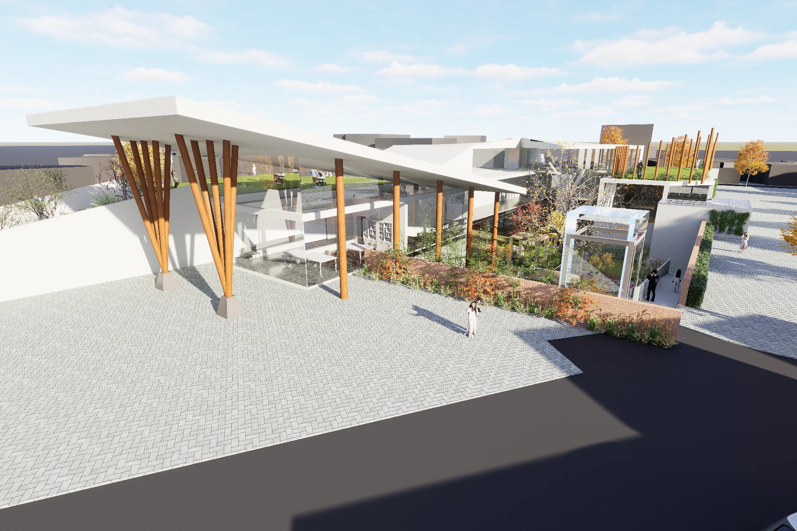
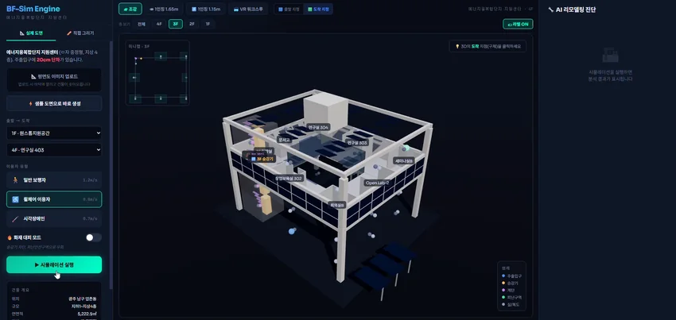

아트센터 · 문화공간작품 보기
COMBINE, 일상의 이야기를 잇다
한옥과 선교사 주택, 마을의 풍경과 일상을 연결하는 양림동 아트센터. 다양한 이야기가 만나는 문화공간을 설계했습니다.
공간을 통해 나를 이야기합니다
사람과 장소를 담는 설계에서 출발해, 공간을 지탱하는 구조와 구현하는 기술로 배움의 시야를 넓혀갑니다.
나의 작업 살펴보기 01—04
FEATURED PROJECT · 2학년 2학기COMBINE일상의 이야기를 잇다12 / SELECTED WORKTHE ACADEMIC ARCHIVE
학년을 선택해 학기별 작업과
탐구 과정을 살펴보세요.
SELECTED PROJECTS
한옥과 선교사 주택, 마을의 풍경과 일상을 연결하는 양림동 아트센터. 다양한 이야기가 만나는 문화공간을 설계했습니다.
 시공 공법 제안작품 보기
시공 공법 제안작품 보기창의적건축공학설계
전자기 유도가열, 강섬유, U-bar를 결합해 PC 습식 접합부의 양생과 연결 성능을 함께 개선하는 공법을 제안했습니다. 건축시공기술대전 우수상 수상작입니다.

BIM·코딩 팀 프로젝트작품 보기스마트건축시스템
BIM 공간 정보를 바탕으로 보행 방식에 따른 경로를 구분하고, 휠체어 사용자의 이동 가능성을 시각화하는 프로토타입을 제시했습니다.
ABOUT MY APPROACH
임유열 / LIM YU YEOL
건축을 배우며 관심을 두어 온 것은
사람의 일상과 장소에 담긴 이야기입니다.
1·2학년에는 조선대학교 건축학과에서 선과 모형, 주거와 공공공간 설계를 통해 사람과 장소를 읽었습니다. 3학년부터는 전남대학교 건축공학과에서 재료·환경·시공을 탐구하고, 4학년에는 구조 해석과 AI·BIM으로 배움의 시야를 넓혔습니다. 이곳에는 설계의 결과와 함께 측정하고 분석하며 생각을 다듬은 과정을 담았습니다.